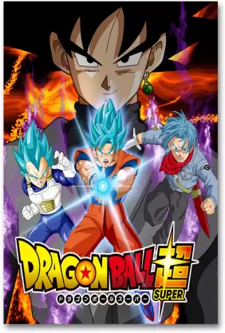
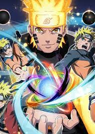
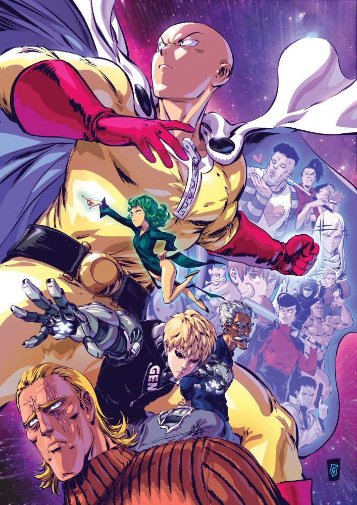
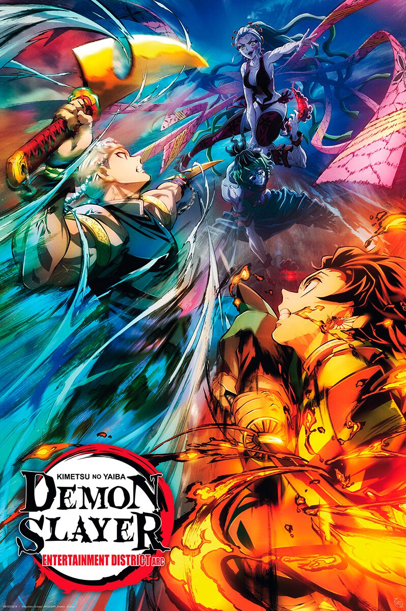

AnimeVerse
Dragon Ball Super
A midquel to Toriyama's original Dragon Ball manga, it follows the adventures of Goku and friends during the ten-year timeskip after the defeat of Majin Buu. It began serialization in Shueisha's monthly shōnen manga magazine V Jump in June 2015. The series' plot begins showing the aftermath of the Majin Buu Saga, then proceeds to retell and alter the stories of Dragon Ball Z: Battle of Gods and Dragon Ball Z: Resurrection ‘F’ as new story arcs. The next part of Super following this takes place in the Universe 6 with the Dragon Team searching for the Super Dragon Balls.
Naruto
Twelve years before the start of the series, the Nine-Tails attacked Konohagakure destroying much of the village and taking many lives. The leader of the village, the Fourth Hokage, sacrificed his life to seal the Nine-Tails into a newborn, Naruto Uzumaki. Orphaned by the attack, Naruto was shunned by the villagers, who out of fear and anger, viewed him as the Nine-Tails itself. Though the Third Hokage outlawed speaking about anything related to the Nine-Tails, the children — taking their cues from their parents — inherited the same animosity towards Naruto.
One Punch Man
Saitama, a bored and bald superhero, can defeat any opponent with a single punch. Despite his incredible strength, he suffers from existential crisis and lacks recognition. He joins the Hero Association and encounters various eccentric heroes and villains. Genos, a cyborg disciple, becomes Saitama's loyal companion.Together, they battle powerful enemies and uncover a conspiracy within the Hero Association.Saitama's effortless victorieslead to a lack of fulfillment and he yearns for a challenging opponent.
Demon Slayer
Tanjiro Kamado, a kind-hearted boy, becomes a Demon Slayer after his family is slaughtered by demons. He embarks on a quest to find a cure for his sister Nezuko, who has been turned into a demon. Joined by loyal companions Zenitsu and Inosuke, they train and battle demons to protect humanity. Tanjiro's Water Breathing techniques and determination make him a formidable opponent. He confronts powerful demons, including the Twelve Kizuki and their leader, Muzan Kibutsuji. Tanjiro's journey is fraught with tragedy, sacrifice, and personal growth. His unwavering love for his sister drives him forward as he fights to restore her humanity and eradicate the demons.
My Hero Academia
In a world where almost everyone has superpowers known as "Quirks," Izuku Midoriya, a Quirkless boy, idolizes the greatest hero, All Might. After impressing All Might with his bravery, Izuku inherits his power, One For All, and enrolls in U.A. High School to become a hero. Alongside his classmates, including fiery Katsuki Bakugo and talented Ochaco Uraraka, Izuku faces challenges and villains to prove himself. They participate in intense training, thrilling battles, and develop their unique Quirks. The League of Villains, led by Tomura Shigaraki, poses a constant threat, aiming to disrupt the balance between heroes and villains.